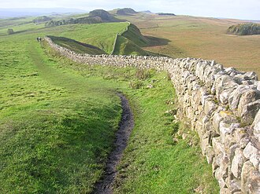
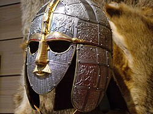
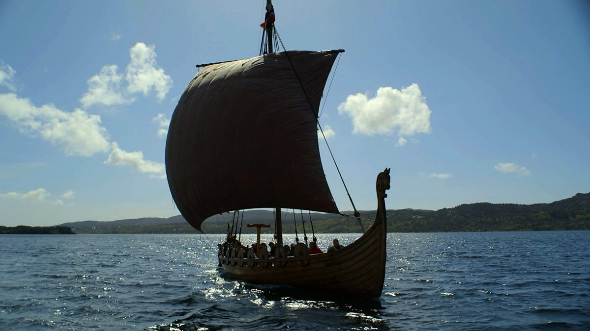

Ancient Maya
An amazing civilisation of astronomers and builders, deep in the rainforests of Central America.

The Ancient Maya — A Journey Through Time
Who the Maya were. Where they lived. Their calendars, cities, writing, gods, and what happened at the end. A full guidebook with eleven chapters and a quiz.
Open the Maya guidebook →Quick facts to remember:
- The Maya lived in present-day southern Mexico, Guatemala, Belize and Honduras.
- They built huge stone cities like Tikal, Palenque, Chichén Itzá and Copán.
- They had three calendars running at once, and invented the number zero.
- Around 6 million Maya people still live today.
Romans in Britain
In 43 AD, a mighty empire crossed the sea and changed Britain forever.
The Roman Empire was the largest empire the world had seen. In 43 AD, the Emperor Claudius sent his armies across the sea to invade Britain.
The Romans stayed for nearly 400 years. They built things that changed Britain for ever:
- Straight roads — so their soldiers could march fast. Many of our motorways follow Roman routes.
- Towns with walls — London (Londinium), York (Eboracum), Bath (Aquae Sulis).
- Baths and central heating — Roman houses had underfloor heating called a hypocaust.
- Writing in Latin — the ancestor of many English words.
- Hadrian’s Wall — a huge stone wall across northern England to keep out the Scottish Picts. Still standing today!
In AD 60, Queen Boudica led the Iceni tribe in a famous rebellion against the Romans. She burned Colchester, London and St Albans before she was defeated.
The Romans finally left Britain around 410 AD, when their empire was in trouble back home.

Anglo-Saxons
After the Romans left, warriors from across the North Sea came to farm and settle.
When the Romans abandoned Britain, groups of people sailed in from Germany, Denmark, and the Netherlands. Three main groups came: the Angles, the Saxons, and the Jutes.
Together they’re called the Anglo-Saxons. The name England comes from “Angle-land” — land of the Angles.
The Anglo-Saxons were farmers, craftsmen, and storytellers. They:
- Lived in wooden villages with thatched roofs.
- Divided Britain into seven kingdoms (like Wessex, Mercia and Northumbria).
- Spoke Old English — the ancestor of the English we speak now.
- Became Christian from around 597 AD after St Augustine arrived from Rome.
One amazing burial was found at Sutton Hoo in Suffolk in 1939 — a whole ship buried underground, filled with treasure belonging to an Anglo-Saxon king.

Vikings
Fierce seafarers from Scandinavia who raided, traded and settled across Britain.
The Vikings came from Denmark, Norway, and Sweden. Their first famous raid on Britain was the attack on Lindisfarne monastery in 793 AD.
Vikings were brilliant sailors and boat-builders. Their long wooden longships were strong enough to cross oceans and light enough to row up rivers. They reached Iceland, Greenland, and even North America — 500 years before Columbus.
In Britain, Vikings:
- Settled a huge area called the Danelaw across northern and eastern England.
- Founded Jorvik (York) as their main city.
- Traded silver, furs, amber and slaves across a vast network.
- Worshipped gods like Odin, Thor and Freya (Thursday is still named after Thor).
In 878 AD, King Alfred the Great of Wessex fought back and forced the Vikings to sign a peace treaty. Slowly, Vikings and Anglo-Saxons began to live side-by-side.

Local History
Every town has a story buried beneath it.
Your own village, town or city has a history stretching back hundreds or even thousands of years. Clues are everywhere:
- Street names — names like “Mill Lane” or “Priory Road” often point to what used to be there.
- Old buildings — churches, pubs, mills, and manor houses often date back centuries.
- Place names — places ending in -by or -thorpe were Viking settlements. Places ending in -chester or -caster were Roman forts.
- Monuments and memorials — war memorials, old stones, and plaques tell the stories of people who lived here.
A great project is to look up a map of your area from 100 years ago and compare it with today. What has changed? What is still the same? Which buildings are still there? Which have been pulled down and built over?
Test Yourself!
Eight questions from across history. The order changes every time you reload.